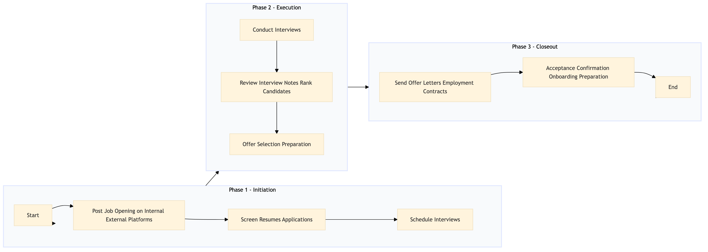

| Role | Steps |
|---|---|
| Recruitment Manager | 1.1 2.1 2.2 2.3 3.1 3.2 3.3 |
| Recruitment Coordinator | 1.2 1.3 3.1 3.2 |
| Hiring Manager | 2.1 2.2 2.3 |
| HR Specialist | 3.1 3.2 3.3 |
| Training Coordinator | 3.3 |
| Step | Name | Role | System | Input | Output | KPI | Dec? | Exc? | Pain Point / Risk |
|---|---|---|---|---|---|---|---|---|---|
| 1.1 | Post Job Opening on Internal & External Platforms | Recruitment Manager | Oracle OPERA Cloud, Knowcross HotSOS | Job description, company branding materials | Posted job opening | Less than 24 hours to post | N | Y | Ensuring compliance with local labor laws and regulations |
| 1.2 | Screen Resumes & Applications | Recruitment Coordinator | Knowcross HotSOS, Oracle OPERA Cloud | Applications received from candidates | Shortlisted candidates list | Less than 3 days to screen resumes | Y | N | Handling large volumes of applications efficiently |
| 1.3 | Schedule Interviews | Recruitment Coordinator | Book4Time, Oracle OPERA Cloud | Shortlisted candidates list | Interview schedule | Less than 5 days to schedule interviews | N | Y | Coordinating schedules with multiple interviewers |
| 2.1 | Conduct Interviews | Recruitment Manager, Hiring Manager | Oracle OPERA Cloud | Interview schedule | Interview notes | Less than 30 minutes per interview | Y | N | Ensuring a fair and consistent interview process |
| 2.2 | Review Interview Notes & Rank Candidates | Recruitment Manager, Hiring Manager | Oracle OPERA Cloud | Interview notes | Ranked candidate list | Less than 1 day to review and rank candidates | Y | N | Balancing technical skills with cultural fit |
| 2.3 | Offer Selection & Preparation | Recruitment Manager, Hiring Manager | Oracle OPERA Cloud, Workday HCM | Ranked candidate list | Offer letter, employment contract | Less than 2 days to prepare offer documents | Y | N | Ensuring competitive compensation packages |
| 3.1 | Send Offer Letters & Employment Contracts | Recruitment Coordinator, HR Specialist | Oracle OPERA Cloud, Workday HCM | Offer letter, employment contract | Sent offer letters and contracts | Less than 3 days to send offers | N | Y | Handling rejections and follow-ups |
| 3.2 | Acceptance Confirmation & Onboarding Preparation | Recruitment Coordinator, HR Specialist | Oracle OPERA Cloud, Workday HCM | Candidate acceptance | Onboarding checklist, orientation schedule | Less than 1 week to confirm and prepare for onboarding | Y | N | Coordinating with multiple departments for smooth onboarding |
| 3.3 | Finalize Onboarding & Welcome New Employee | HR Specialist, Training Coordinator | Oracle OPERA Cloud, Workday HCM | Onboarding checklist, orientation schedule | New employee on boarded and welcomed | Less than 2 weeks to complete onboarding | N | Y | Providing comprehensive training and support |
Recruitment and Talent Acquisition process for a full-service Marriott hotel using Oracle OPERA Cloud PMS and other Marriott systems.